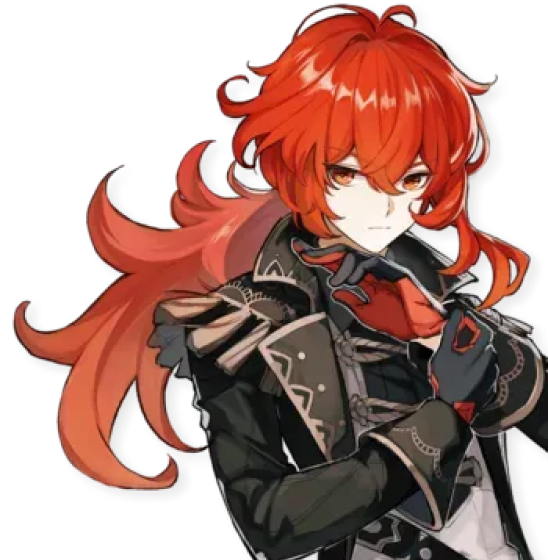
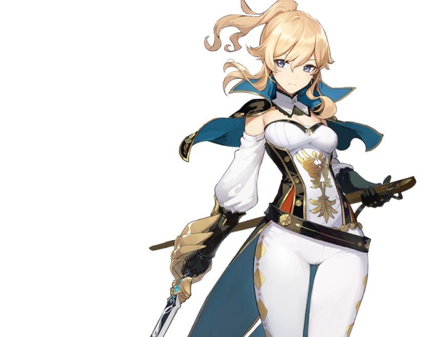
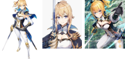

Childe
11th of the Eleven Fatui Harbingers
Tartaglia
Ryohei Kimura
(木村 良平)[2]
PROFILE
Meet Tartaglia — the cunning Snezhnayan whose unpredictable personality keeps people guessing his every move.
Don't be under any illusion as to what he might be thinking or what his intentions are. Just remember this: Behind that innocent, childlike exterior lies a finely honed instrument of war.
OTHER IMAGES
Keqing
Driving Thunder
Keqing
Yuheng of the Liyue Qixing
Eri Kitamura
(喜多村 英梨)[1]
PROFILE
The Yuheng of the Liyue Qixing. Keqing has much to say about Rex Lapis' unilateral approach to policymaking in Liyue —
but in truth, gods admire skeptics such as her quite a lot.
She firmly believes that humanity's future should be determined by humans themselves,
and that they can even do better than the archons and adepti have done for them. In order to prove this, she works harder than anyone else.
OTHER IMAGES
Diluc
The Dark Side of Dawn
Diluc Ragnvindr
Kensho Ono
(小野 賢章)[1]
PROFILE
As the wealthiest gentleman in Mondstadt, the ever-dapper Diluc always presents himself as the epitome of perfection. But behind the courteous visage burns a zealous soul that has sworn to protect Mondstadt at all costs, allowing him to mercilessly vanquish all who threaten his city.
OTHER IMAGES
Jean
Dandelion Knight
Jean Gunnhildr
Chiwa Saitō
(斎藤 千和)[1]
PROFILE
As the Acting Grand Master of the Knights, Jean has always been devoted to her duties and maintaining peace in Mondstadt. She had taken precautions long before the onset of Stormterror's assault, and she will guard Mondstadt with her life as always.
OTHER IMAGES
